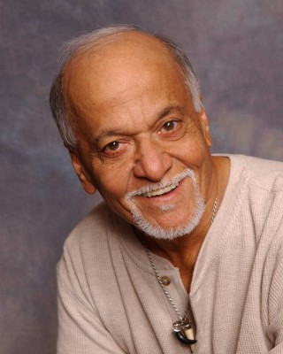
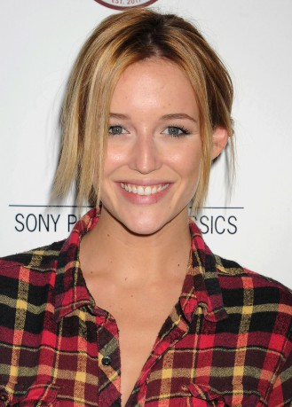
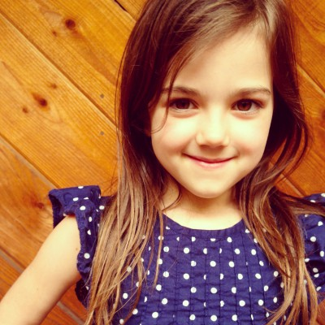
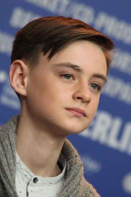

#5188 Playing it Cool

 IMDB-Wertung: 6.0 / 10
IMDB-Wertung: 6.0 / 10  Metascore: 0
Metascore: 0 
Obwohl ER bislang kaum ernsthafte Erfahrungen in Sachen Liebe gesammelt hat, soll der Drehbuchautor eine romantische Komödie schreiben. Im Gegensatz zu ihm ist sein bester Freund Scott ein hoffnungsloser Romantiker, der die Welt durch eine rosarote Brille sieht. Um sich von seiner Schreibblockade abzulenken, geht er auf ein wohltätiges Event, wo er SIE kennenlernt. Mit Leichtigkeit ist sie seiner Klugheit und seinem Sinn für Humor gewachsen und übertrifft schon bald all die Erwartungen, die er an eine Frau hat. Einziges Problem bei der ganzen Sache ist, dass sie in einer festen Beziehung steckt und kurz vor der Hochzeit mit einem anderen Mann steht. Dennoch versucht der Charmeur mit allen Mitteln, ihr Herz zu gewinnen. Ob er damit Erfolg haben wird?
Jahr: 2014
Dauer: 95 Minuten
FSK: 12
Land: USA Studio: Vertical EntertainmentTonspuren: DTS - ,
Untertitel: Deutsch,
Auflösung: 1080p (1920x800) Größe: 5355 MB
Genre: Komödie, Liebe
Regisseur: Justin Reardon
Drehbuch: David Golden
Soundtrack:
Darsteller:
 Chris Evans als Me
Chris Evans als Me Michelle Monaghan als Her
Michelle Monaghan als Her Topher Grace als Scott
Topher Grace als Scott Aubrey Plaza als Mallory
Aubrey Plaza als Mallory Luke Wilson als Samson
Luke Wilson als Samson Martin Starr als Lyle
Martin Starr als Lyle Anthony Mackie als Bryan
Anthony Mackie als Bryan Ioan Gruffudd als Stuffy
Ioan Gruffudd als Stuffy Philip Baker Hall als Granddad
Philip Baker Hall als Granddad Patrick Warburton als Hedge Funder
Patrick Warburton als Hedge Funder-  Gerry Bednob als Cabbie / Gabriel
- Velina Brown als Tourist Couple Girl
- Peyton List als Hot Girl
 Kyle Mooney als Other Dude
Kyle Mooney als Other Dude-  Sarah Dumont als Cute Girl
- Matthew Morrison als Matthew Morrison
- Ashley Tisdale als Ashley Tisdale
 Beverly D'Angelo als Lyle's Girlfriend
Beverly D'Angelo als Lyle's Girlfriend- Brenda Schmid als Blissful Girl
- Scott Evans als Blissful Boy
- Precious Chong als Serious Girl
- Thomas R. Martin als Serious Guy
 Tony Cavalero als Charity Waiter
Tony Cavalero als Charity Waiter- Catero Colbert als Diner Waiter
- Kelsey McNamee als Charity Event Hostess
- Henrietta Meire als Mother
-  Abby Ryder Fortson als Little Girl
- Sean Carrigan als Another Guy
- Petie Sjogren als Teenage Girl
- Lara Everly als Girl Next Door
- Jeremy Glazer als New Guy
- Fabianne Therese als College Girl
- Carl McDowell als Neighbor
- Shantel Wislawski als Supermodel
 Michael X. Sommers als San Francisco Bystander
Michael X. Sommers als San Francisco Bystander-  Jaeden Lieberher als 6 Year Old Me
- Carmina Garay als 6 Year Old Girl
- Kahyun Kim als Korean Woman
- Mikaela Hoover als Lacey
- Shira Scott Astrof als Vivian
- Devon Ogden als Sadie
- Jaden Alexander als Photographer , uncredited
- Natalie Marie Ames als Charity Event Guest , uncredited
- Drew Benda als Tourist , uncredited
- Julie Berlin als Party Guest , uncredited
 Cici Leah Campbell als Medieval English Peasant , uncredited
Cici Leah Campbell als Medieval English Peasant , uncredited Thomas Dalby als The Groundskeeper , uncredited
Thomas Dalby als The Groundskeeper , uncredited- Sandra Daubert als Valentino Woman , uncredited
- Alexandra Fatovich als Maid of Honor , uncredited
- Tina Gilton als SF State University Student , uncredited
Datei: X:\2014(N-Z)\Playing it Cool (2014, FSK12, 1920x800).mkv seit 28.12.2016
Festplatte: HD 2013(I-Z)-2014(A-Z)
 Es gibt insgesamt 163 Filme in der Gruppe '2014(N-Z)'
Es gibt insgesamt 163 Filme in der Gruppe '2014(N-Z)'